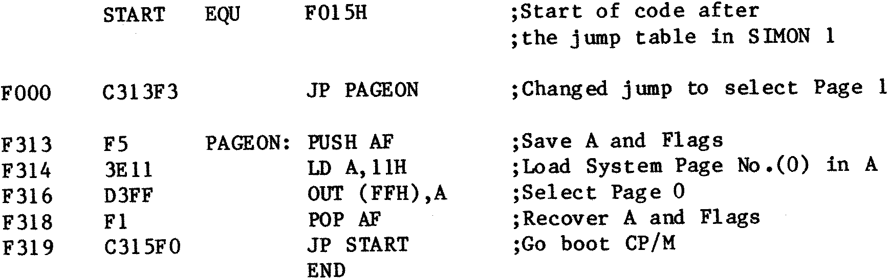
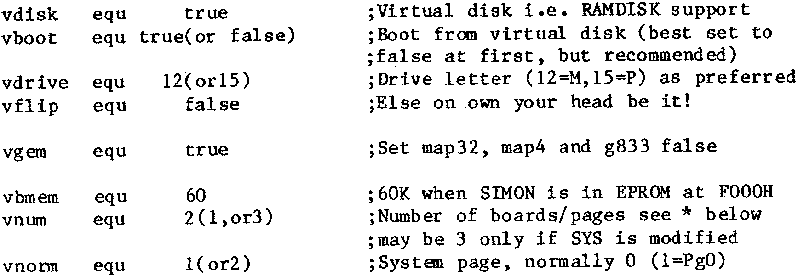

Configuring Software
There are other ways to do it, but the above code works on both of my
Nascoms, and CP/M, CCPZ etc, boot up and run with either
GM862
or
GM802
RAM
boards installed. Having got thus far, there was still the job of configuring
CP/M to actually drive the other memory page/s as Ramdisk. If Gemini’s
CONFIG.COM is available for the version of CP/M used, then it’s a doddle. One
simply selects Menu option 8 (7 on some versions) and if you are using the
GM862, have SIMON in EPROM at F000h, and run 60K CP/M or whatever, enter 3 for
the number of extra pages and 60 for the Kilobyte size of each page. By
selecting the appropriate number of pages, CONFIG can accommodate up to three
additional 64K
GM802
boards in the same manner, but do NOT specify more boards
or pages of RAM than are installed because the system will crash and/or fail
to boot. Test the system by typing M: to select the Ramdisk, when the M> or
M0> prompt should appear. A DIR command should respond with a NO FILE message.
Return to ‘normal’ via an A: command and type STAT M: when the response should
indicate between 172K and 178K ‘bytes free’ if three 60K pages are in use. If
only one 60K page is in use the response will be a (disappointing) 52K to 58K
depending upon the size of the BIOS and the allocated Ramdisk Directory. Try
PIPing and STATing programs around between Disk and RAM to ensure that all is
well. SWEEP may also be used, but the versions written in high level code
hang-up if zero sized files are transmitted and exhibit a few other minor
bugs. However NSWEEP 2.07, a later Z80 code version, has behaved faultlessly
with Ramdisks. The proven configuration on the Disk system tracks may now be
SYSGENed onto other disks or the configuration process can be repeated as
required.
SYS Assembly
To activate Page mode Ramdisk operation under later versions of SYS
requires that module SYSB1 be re-assembled using M80 with the appropriate
software switches set as follows:–
